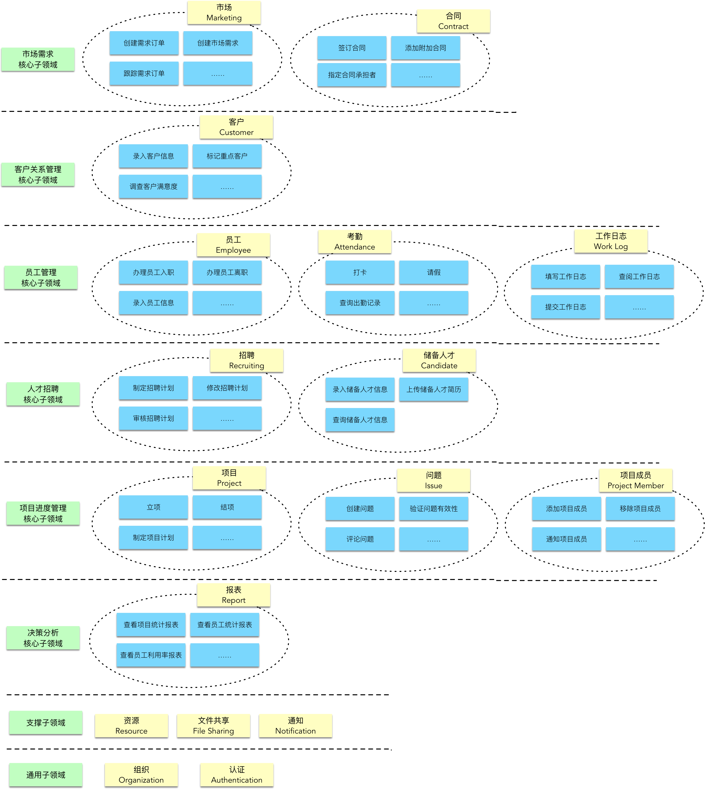
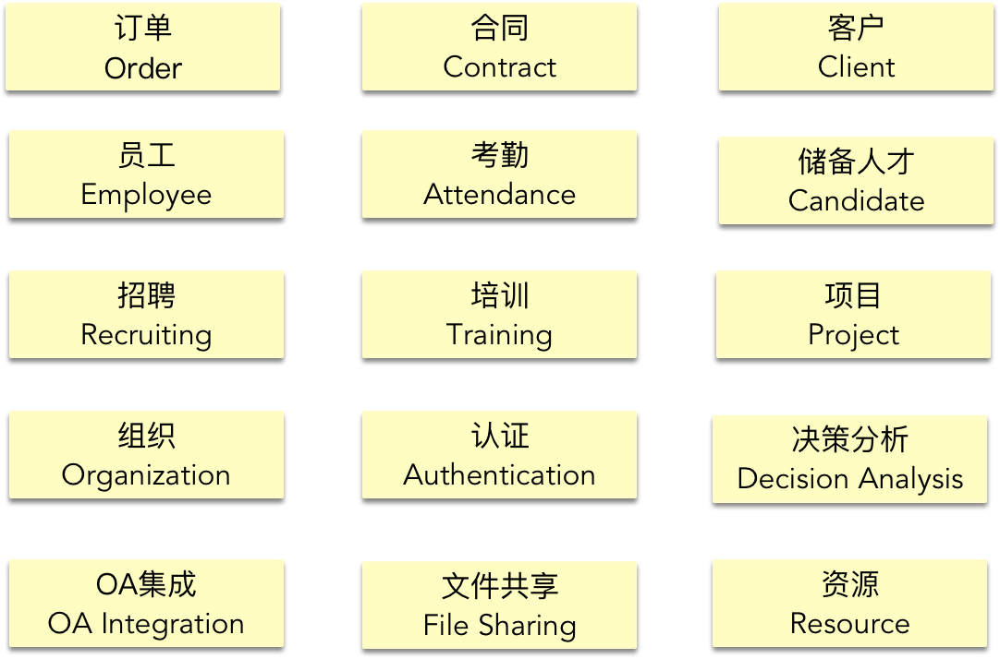

- 001 「战略篇」访谈 DDD 和微服务是什么关系？.md.html
- 002 「战略篇」开篇词：领域驱动设计，重焕青春的设计经典.md.html
- 003 领域驱动设计概览.md.html
- 004 深入分析软件的复杂度.md.html
- 005 控制软件复杂度的原则.md.html
- 006 领域驱动设计对软件复杂度的应对（上）.md.html
- 007 领域驱动设计对软件复杂度的应对（下）.md.html
- 008 软件开发团队的沟通与协作.md.html
- 009 运用领域场景分析提炼领域知识（上）.md.html
- 010 运用领域场景分析提炼领域知识（下）.md.html
- 011 建立统一语言.md.html
- 012 理解限界上下文.md.html
- 013 限界上下文的控制力（上）.md.html
- 014 限界上下文的控制力（下）.md.html
- 015 识别限界上下文（上）.md.html
- 016 识别限界上下文（下）.md.html
- 017 理解上下文映射.md.html
- 018 上下文映射的团队协作模式.md.html
- 019 上下文映射的通信集成模式.md.html
- 020 辨别限界上下文的协作关系（上）.md.html
- 021 辨别限界上下文的协作关系（下）.md.html
- 022 认识分层架构.md.html
- 023 分层架构的演化.md.html
- 024 领域驱动架构的演进.md.html
- 025 案例 层次的职责与协作关系（图文篇）.md.html
- 026 限界上下文与架构.md.html
- 027 限界上下文对架构的影响.md.html
- 028 领域驱动设计的代码模型.md.html
- 029 代码模型的架构决策.md.html
- 030 实践 先启阶段的需求分析.md.html
- 031 实践 先启阶段的领域场景分析（上）.md.html
- 032 实践 先启阶段的领域场景分析（下）.md.html
- 033 实践 识别限界上下文.md.html
- 034 实践 确定限界上下文的协作关系.md.html
- 035 实践 EAS 的整体架构.md.html
- 036 「战术篇」访谈：DDD 能帮开发团队提高设计水平吗？.md.html
- 037 「战术篇」开篇词：领域驱动设计的不确定性.md.html
- 038 什么是模型.md.html
- 039 数据分析模型.md.html
- 040 数据设计模型.md.html
- 041 数据模型与对象模型.md.html
- 042 数据实现模型.md.html
- 043 案例 培训管理系统.md.html
- 044 服务资源模型.md.html
- 045 服务行为模型.md.html
- 046 服务设计模型.md.html
- 047 领域模型驱动设计.md.html
- 048 领域实现模型.md.html
- 049 理解领域模型.md.html
- 050 领域模型与结构范式.md.html
- 051 领域模型与对象范式（上）.md.html
- 052 领域模型与对象范式（中）.md.html
- 053 领域模型与对象范式（下）.md.html
- 054 领域模型与函数范式.md.html
- 055 领域驱动分层架构与对象模型.md.html
- 056 统一语言与领域分析模型.md.html
- 057 精炼领域分析模型.md.html
- 058 彩色 UML 与彩色建模.md.html
- 059 四色建模法.md.html
- 060 案例 订单核心流程的四色建模.md.html
- 061 事件风暴与业务全景探索.md.html
- 062 事件风暴与领域分析建模.md.html
- 063 案例 订单核心流程的事件风暴.md.html
- 064 表达领域设计模型.md.html
- 065 实体.md.html
- 066 值对象.md.html
- 067 对象图与聚合.md.html
- 068 聚合设计原则.md.html
- 069 聚合之间的关系.md.html
- 070 聚合的设计过程.md.html
- 071 案例 培训领域模型的聚合设计.md.html
- 072 领域模型对象的生命周期-工厂.md.html
- 073 领域模型对象的生命周期-资源库.md.html
- 074 领域服务.md.html
- 075 案例 领域设计模型的价值.md.html
- 076 应用服务.md.html
- 077 场景的设计驱动力.md.html
- 078 案例 薪资管理系统的场景驱动设计.md.html
- 079 场景驱动设计与 DCI 模式.md.html
- 080 领域事件.md.html
- 081 发布者—订阅者模式.md.html
- 082 事件溯源模式.md.html
- 083 测试优先的领域实现建模.md.html
- 084 深入理解简单设计.md.html
- 085 案例 薪资管理系统的测试驱动开发（上）.md.html
- 086 案例 薪资管理系统的测试驱动开发（下）.md.html
- 087 对象关系映射（上）.md.html
- 088 对象关系映射（下）.md.html
- 089 领域模型与数据模型.md.html
- 090 领域驱动设计对持久化的影响.md.html
- 091 领域驱动设计体系.md.html
- 092 子领域与限界上下文.md.html
- 093 限界上下文的边界与协作.md.html
- 094 限界上下文之间的分布式通信.md.html
- 095 命令查询职责分离.md.html
- 096 分布式柔性事务.md.html
- 097 设计概念的统一语言.md.html
- 098 模型对象.md.html
- 099 领域驱动设计参考过程模型.md.html
- 100 领域驱动设计的精髓.md.html
- 101 实践 员工上下文的领域建模.md.html
- 102 实践 考勤上下文的领域建模.md.html
- 103 实践 项目上下文的领域建模.md.html
- 104 实践 培训上下文的业务需求.md.html
- 105 实践 培训上下文的领域分析建模.md.html
- 106 实践 培训上下文的领域设计建模.md.html
- 107 实践 培训上下文的领域实现建模.md.html
- 108 实践 EAS 系统的代码模型.md.html
- 109 后记：如何学习领域驱动设计.md.html
033 实践 识别限界上下文
先启阶段的领域场景分析是一个艰难的过程，我们要从纷繁复杂的业务需求细节中抽象出全部的领域场景，并通过剖析这些场景来获得一致的领域概念，提炼出主要的用户活动，并转换为用统一语言表达的领域行为。在这个过程中，用例帮了我们的大忙。用例的形式其实等同于 Alberto 提出的“事件风暴”中的命令（Command）。命令的发起者是参与者（Actor），所不同的是事件风暴关注的命令比用例粒度更细，且它主要的设计驱动力是命令产生的事件（Event）：
事件风暴利用命令和事件驱动出领域驱动战术设计中的聚合（Aggregate）概念，Alberto 认为聚合对象（准确地说是聚合根实体对象）才是命令的真正发起者。于是，命令与事件就与聚合产生了依存关系：
但我认为，如果从一开始的设计就进入到聚合层次，团队可能会陷入到太多纠缠的业务需求细节中。尤其是一些大型的复杂业务系统，要识别出来的命令何止千数！即使通过率先识别核心子领域，再对核心子领域的各种业务场景的命令进行分析，数量仍然客观。如果再加上团队与领域专家的沟通成本，这个事件风暴持续的时间就未免太过漫长了。
在寻找系统架构的解决方案时，我更看重限界上下文对边界的控制力，也就是说，在进行领域驱动设计时，首先进入的是战略阶段，而在战略阶段，我们首先要识别的是限界上下文。
通过边界识别限界上下文
对限界上下文的识别很难做到一蹴而就。通过对限界上下文的本质与价值的剖析，我们希望从业务边界、工作边界再到应用边界三个层次递进和演化的方式打磨限界上下文，使得它的边界和粒度更加合理，为整个系统的逻辑架构与物理架构奠定良好的基础。
业务边界的识别
领域场景分析中用例划定的主题边界可以作为识别限界上下文的起点。很明显，主题边界的粒度要大于聚合，但是否与限界上下文的边界重叠呢？我不能给出确定的答案，但毫无疑问，主题边界对应于限界上下文的“业务边界”。对于 EAS 系统而言，我们通过用例图可以得出如下的业务主题：

正如前面识别业务主题的过程，我们通过语义相关性和功能相关性对用例进行了归类，这种归类就是“高内聚”原则的体现。可以确定，在相同主题内的用例其相关性要强于不同主题的用例。要识别限界上下文，除了用例级别的归类之外，我们还需要判断主题之间的相关性。如上图所示，我们获得的主题彼此之间存在非常明显的“亲疏”关系，更为“亲密”的主题会组成一个子领域。即使在同一个子领域中，主题之间的“亲疏”关系也有所不同。例如，在项目进度管理子领域中，“项目”主题与“问题”主题的相关性，无疑要比“项目成员”更为紧密。如果再深入分析“项目成员”主题，虽然它与“项目”主题之间存在一定的依赖关系，但从领域概念上，所谓的“项目成员”其实是用户的一种角色，而“项目组”则可以理解为是一个“组织”层级。如此说来，它更像是“组织”主题中组织与角色抽象的一个具体实现，如下图所示：
显然，“项目”主题与“问题”主题代表了不同的用户目标，但各自的业务边界却是非常紧密的，可以考虑合并为一个限界上下文，至于项目与组织的业务边界就确定无疑需要分开了。这种亲疏关系的判断当然需要深入理解业务，但似乎也可以称之为一种设计感觉。这或许就是 Vernon 提到的所谓“经验”罢了。
那么有没有什么设计的原则或者依据呢？就以上述分析项目、问题、项目成员之间的亲疏关系为例，它们就好像居住在不同小区的居民。比如说项目和问题住在同一个小区，他们是邻居关系；项目成员住在另一个临近的小区，仍然是邻居，但相隔的距离更远。倘若临近小区的居民和这个小区居民之间又存在亲属关系，意义又有所不同。当一个小区的权益受到侵害时，同一个小区居民的利害关系是休戚与共的。当一个家族的权益受到侵害时，同为亲属的居民的利害关系又绑在一起了。所以，关系的“亲密”程度会因为你观察角度的不同而发生变化，关键在于你选择什么样的判断标准。
那么，为何要将“问题”归入“项目”上下文，而不是选择“项目成员”？除了因为项目成员与组织之间存在粘性之外，在概念上，“问题”其实属于“项目”的子概念，在层次上处于“劣势”地位。借用 Kent Beck 在设计上提出的单一抽象层次原则，项目与问题其实并没有处在同一个抽象层次。再以“招聘”主题和“储备人才”主题为例，你会发现二者就没有非常明显的“上下级”关系。它们之间的关系或许是比较紧密的，但彼此之间是平等的层次。
**在运用“单一抽象层次原则”时，对主题的命名也会影响到对主题关系之间的判断。**如果命名过于抽象，就可能产生该抽象的主题隐隐地包含了别的主题。以市场需求子领域中的“市场”主题和“合同”主题为例，从概念的归属来讲，似乎合同也应属于市场的范畴。故而带来两个设计选择：
- 要么将合同主题纳入到市场主题，进而形成一个市场上下文；
- 要么将市场主题命名为“订单”，订单与合同，显然两个领域概念处于同一层次。
在划分主题时，我们还应该遵循正交原则，即主题之间存在唯一的依赖点，除了这个依赖点之外，主题的其他变化不应该影响到另一个主题。例如，为什么我要单独识别出“文件共享”主题与“通知”主题？就是因为在诸如“员工”、“储备人才”、“合同”等主题中都包含了文件上传下载的用例，在诸如“项目”、“合同”、“招聘”等主题中都包含了消息通知的用例。如果不分离出来，一旦文件上传下载的实现有变，或者消息通知的实现有变，都会影响到这些相关的业务主题，造成一种“霰弹式修改”的代码坏味，这就违背了“正交原则”。
通过对业务边界的分析，并运用单一抽象层次原则与正交原则，我们得到了 EAS 限界上下文的草案：
工作边界的识别
从工作边界识别限界上下文是一个长期的过程，当然，这其中也牵涉到对需求变更和新需求加入时的柔性设计。对限界上下文进行开发的团队应尽量为特性团队（Feature Team），且遵循 2PTs 原则。倘若随着时间的推移，团队的规模越来越大，就是在传递限界上下文边界不合理的信号。正如前面所言，团队的每一个人都要像守护自己家庭一般守护好团队的工作边界。在我参与咨询的一些客户中，就有客户因为团队规模变得越来越大（接近 20 人）而取消了原来的每日站会。团队规模太大，交流成本变高，一个大团队的每日站会就会成为“鸡肋”。
那么，限界上下文与 2PTs 特性团队之间的映射关系究竟是怎样的呢？这似乎并没有定论，取决于团队成员的能力水平、限界上下文的复杂程度，也与系统的类型（项目还是产品）息息相关。
我认为，首先要避免一个限界上下文的工作边界过大，导致需要多个 2PTs 特性团队共同来完成，因为这会带来不必要的沟通成本。倘若出现了这种情况，说明我们需要继续分解限界上下文。那么，是否可以将多个限界上下文分配给一个特性团队呢？由于限界上下文的划分遵循了“高内聚、低耦合”的原则，只要我们规定好限界上下文之间的协作契约，就可以并行开发多个限界上下文。对于其中的一个限界上下文而言，无论它的特性有多少，只要用户故事的拆分保证了合适的开发粒度，考虑用户故事之间存在的业务依赖和技术依赖，每个限界上下文就必然存在一个最大并行开发度（Max Degree of Parallel Development，MDPD）。而对于一个特性团队而言，也存在一个最大并行开发度，其值可以借鉴精益看板提出的 WIP Limits（WIP 即 Work in Progress，在制品限制）。假设不考虑开发人员的结对，一个 2PTs 特性团队的在制品限制大约为 4~5，则限界上下文（Bounded Context，BC）遵循的公式为：
[Math Processing Error]∑BC(MDPD)≈WIPLimits
例如说，我们将订单、合同、客户主题都视为独立的限界上下文，并分配给一个 2PTs 特性团队，这个团队的 WIP Limits 为 5。如果订单上下文的最大并行开发度为 4，合同上下文的最大并行开发度为 2，客户上下文的最大并行开发度为 3，根据前面公式，就可以得到三个限界上下文的最大并行开发度之和为 9，这就远远大于了 WIP Limits，如果仍然保持这种工作分配，就会导致限界上下文的开发周期延长。反过来，如果我们只将合同上下文分配给该团队，又会造成特性团队开发人员的浪费。
当然，这种判断依据存在理想与现实的差异。例如，开发团队的人力资源是存在限制的，开发周期的长度也存在限制，在项目早期，也很难精确计算一个限界上下文的最大并行开发度。故而这个公式无法像数学公式那样给予精确的计算，但确乎可以作为限界上下文与开发团队映射关系的一个参考。
还有一个判断限界上下文工作边界划分是否合理的原则是：限界上下文是否允许进行并行开发。无法并行开发，则意味着限界上下文之间的依赖太强，违背了“高内聚、松耦合”原则。例如，在前面识别的 EAS 限界上下文草案中，抛开发布与迭代计划在功能优先级的考量，我们发现报表上下文与客户、合同、订单、项目、员工等上下文都存在非常强的依赖关系。如果这些上下文没有完成相关的特性功能，我们就很难去实现报表上下文，这就引起了我们对报表上下文的思考。由于报表上下文中的诸多统计报表其实是与各自的业务强相关的，例如，“查看项目统计报表”用例就只需要统计项目的信息，因而可以考虑将这些用例放到业务强相关的限界上下文中。
结合工作边界和业务边界，我们认为工作日志的业务边界过小，且从业务含义上看，它也可以视为是员工管理的其中一项子功能，因而决定将工作日志合并到员工上下文内部，作为该限界上下文的一个模块（Module）。虽然考勤也属于员工管理的范畴，但它需要访问考勤机外部硬件，且请假与出勤亦属于单独的一个业务方向，因而仍然保留了考勤上下文。
对于储备人才与招聘之间的关系，类似于工作日志之于员工，我们最初也想将储备人才合并到招聘上下文中，然而客户对需求的反馈打消了我们这一决策考量。因为该软件集团旗下还有一家软件学院，集团负责人希望将软件学院培养的软件开发专业的学生也纳入到企业的储备人才库中，这就需要 EAS 系统与学校的学生管理系统集成，影响了对储备人才的管理模式。这一需求一下子扩充了储备人才的领域内涵，为它的“独立”增加了有力的砝码。
一些限界上下文之间的依赖通过需求分析是无法呈现出来的，这就有赖于上下文映射对这种协作（依赖）关系的识别。一旦明确了这种协作关系，包括接口的定义与调用方式，就相当于在两个团队之间确定了交流与合作方式，可以利用 Mock 或 Stub 接口的方式解除这种依赖，实现并行开发。
通过工作边界识别限界上下文的一个重要出发点是激发团队成员对工作职责的主观判断，也就是在第 15 课提及的针对团队的“渗透性边界”，团队成员需要对自己负责开发的需求“抱有成见”，尤其是团队成员在面对需求变更或新增需求的时候。在 EAS 系统的设计开发过程中，客户提出了增加“员工培训”的需求，该需求要求人力资源部能够针对员工的职业规划制定培训计划，确定培训课程，并实现对员工培训过程的全过程管理。
由于考虑到这些功能与员工上下文有关，我们最初考虑将这些需求直接分配给员工上下文的特性团队。然而，团队的开发人员提出：这些功能虽然看似与员工有关，但实际上它是一个完全独立的“培训”领域，包括了培训计划（Training Plan）制定、培训提名（Nomination）、培训过程管理等业务知识，与员工管理完全是正交的。最终，我们为培训建立了一个专门的特性团队，同时，在架构中引入了培训（Training）上下文。
针对类似文件共享和通知这样一些属于支撑子领域或者通用子领域的限界上下文，粒度可能是不均匀的，互相之间又不存在关联。这时，我们应确保原定的限界上下文业务边界，然后视其粒度酌情分配给一个或多个特性团队，甚至部分限界上下文因为不牵涉到垂直业务功能，可能还需要创建组件团队（Component Team）。在有的项目中，提供支撑功能的底层实现面临较大的技术挑战，又或者底层功能在整个公司存在普适性，这时就可以单独抽离出来，形成公司范围内的框架或平台，这样的框架和平台就不再属于当前系统的范围了（属于 System Context 之外）。
根据需求变化以及对团队开发工作的分配，我们调整了限界上下文：
我们将工作日志合并到了员工上下文，同时为了应对新需求的变更，增加了培训（Training）上下文，并暂时去掉了报表上下文。之所以说“暂时”，是因为还需要对其做一些技术层面的判断。
应用边界的识别
对应用边界的识别，就是从技术角度来考量限界上下文，包括考虑系统的质量属性，模块的重用性，对需求变化的应对以及如何处理遗留系统的集成等。
针对报表上下文留下来的遗留问题，我们与客户进行了需求上的确认，明确了集团决策层的需求，就是希望系统提供的统计报表能够准确及时地展现历史和当前的人才供需情况。显然，统计报表功能直接影响了系统的业务愿景，是系统的核心功能之一。我们需要花费更多精力来明确设计方案。通观报表上下文提供的用例行为，除了与职能部门管理工作有关的统计日报、周报和月报外，报表的统计结果实际上为集团领导进行决策提供了数据层面的辅助支持。要提供准确的数据统计，就需要对市场需求、客户需求、项目、员工、储备人才、招聘活动等数据做整体分析，这需要整个系统核心限界上下文的数据支持。倘若 EAS 的每个限界上下文并未采用微服务这种零共享架构，则整个系统的数据就可以存储在一个数据库中，无需进行数据的采集和同步，就可以在技术上支持统计分析。另一种选择就是引入数据仓库技术，无论我们选择何种架构模式，都可以采用诸如 ETL 形式完成对各个生产数据库以及日志文件的采集，由统一的数据仓库为统计分析提供数据支持。
虽然在分析工作边界时，我们认为报表上下文与其他限界上下文存在强依赖关系，无法支持并行开发，因而考虑将该上下文的功能按照业务相关性分配到其他限界上下文中。如今通过技术分析，虽然这种依赖性仍然存在，但该上下文包含的用例更多地体现了“决策分析”的特定领域。最终，我们还是决定保留该限界上下文，并更名为决策分析上下文。
在 EAS 系统中，我们从技术层面再一次讨论了员工上下文和储备人才上下文的边界。从业务相关性的角度看，员工属于员工管理的领域范畴，而储备人才并非正式员工，是招聘的目标。但是，从领域建模的角度讲，员工与储备人才的模型实在是太相似了，如下图所示：
两个模型除了聚合根的名字不同之外，几乎是一致的。我们是否要对二者进行抽象呢？如下图所示：
从面向对象的角度看，这种抽象是合理的，也能在一定程度上避免代码的重复开发。然而，这样的设计决定了我们不能将员工和储备人才放在两个不同的限界上下文中，否则就会导致二者的强耦合。若是放在同一个限界上下文，又违背了业务相关性。从技术实现的角度讲，我们必须要考虑员工和储备人才各自的持久化。即使它们在模型上保持了极大的相似度，但是除了一种场景即“从储备人才转为正式员工”用例需要将二者结合起来，其余场景二者都是完全隔离的。即使是这样的业务场景，一旦储备人才转为了正式员工，二者就不存在任何关系了。显然，它们模型相似但在业务上却是独立进化的，数据持久化的实现也必须是完全隔离的。因此，我们仍然保留了这两个独立的限界上下文。
在考虑通知上下文的实现时，基于之前系统上下文（System Context）的分析，EAS 系统要与集团现有的 OA 系统进行集成。为了实现二者的集成，我们了解了 OA 系统公开的服务接口，发现这些接口中已经提供了多种消息通知功能，包括站内消息、邮件通知和短消息通知。从业务需求上看，在进行流程处理时，发送的消息通知本身就将作为 OA 系统的待办项，由员工在 OA 系统中对其进行处理，技术实现上也没有必要对通知功能进行重复开发。于是，之前分析的通知上下文似乎就不再有存在的必要。但仔细思考，与 OA 系统集成的功能又该放在哪里呢？领域驱动设计建议将这种与第三方服务集成的功能放在防腐层中，但由于 EAS 系统有多个限界上下文都需要调用该功能，我们不可能在各自的限界上下文中重复创建防腐层。为了满足功能的重用性，就应该为该集成功能单独创建一个限界上下文。至于命名，应该将“通知（Notification）”更名为“OA 集成（OA Integration）”。
最终，我们得到了如下的限界上下文：

即使经历了对业务边界、工作边界和应用边界的分析，我们仍然不敢保证现在得到的限界上下文就是合理的。毕竟，先启阶段进行的领域场景分析还比较粗略，我们也无法预判未来需求还会发生什么样的变化。因而，作为战略设计阶段核心的限界上下文解决方案是需要不断演进的。何况，我们还没有深入分析这些限界上下文之间的协作关系呢。